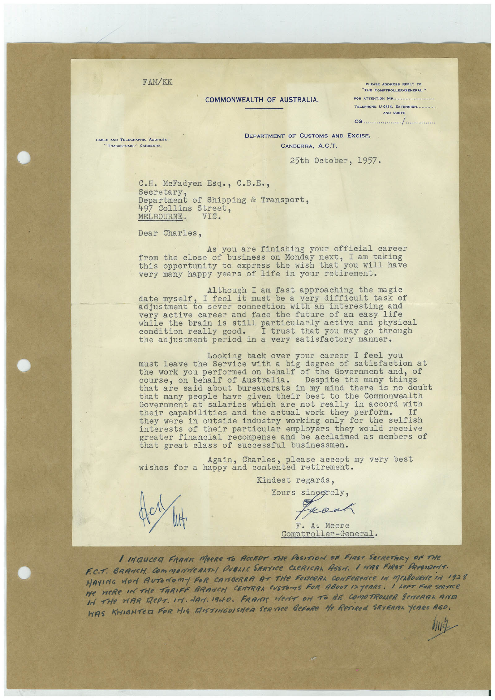

Book 1 · scan 066


Description
Transcription
Context
Review notes
Compare the machine draft with the scan. Handwriting and names need human review.
Artifacts
Edit the artifacts field in this note’s frontmatter to change these records. This summary is generated.
B01-S066-A01 — Letter & Handwritten note — Book 1, scan 066
Types: Typed document, Letter, Handwritten note
Scope: Whole scanned page; individual items can be split out during review.
Caption: Not mapped yet.
Caption source: Not recorded yet.
Caption status: unmapped
Machine transcription
FAM/KK CABLE AND TELEGRAPHIC ADDRESS : TRACUSTOMS," CANBERRA PLEASE ADDRESS REPLY G THE COMPTROLLER-GENERAL." COMMONWEALTH OF AUSTRALIA. FOR ATTENTON MR.... TELEPHONE U 0414 ExTENSION.. AND OBOTS CG. DEPARTMENT OF CUSTOMS AND EXCISE, CANBERRA, A.C.T. 25th October, 1957. C.H. McFadyen Esq., C.B.E., Secretary, Department of Shipping & Transport, 497 Collins Street, MEL BOURNE• VIC. Dear Charles, you are finishing your official career from the close of business on Monday next, I am taking this opportunity to express the wish that you will have very many happy years of life in your retirement. Although I am fast approaching the magic date myself I feel it must be a very difficult task of adjustment to sever connection with an interesting and very active career and face the future of an easy life while the brain is still particularly active and physical condition really good. I trust that you may go through the adjustment period in a very satisfactory manner. Looking back over your career I feel you leave the Service with a big degree of satisfaction at the work you performed on behalf of the Government and, of course, on behalf of Australia. Despite the many that are said about bureaucrats in my mind there is no doubt that many people have given their best to the Commonwealth Government at salaries which are not really in accord with their capabilities and the actual work they perform. they were in outside industry working only for the interests of their particular employers they would receive greater financial recompense and be acclaimed as members of that great class of successful businessmen. Again, Charles, please accept my very best wishes for a happy and contented retirement. Kindest regards, got wit Yours sincerely, kant F. A: Meere Comptroller-General. / INAUCer FRANK MeRe TO ACCEDE THe POSITION OF FIRST SeCReTARY OF THe F.C.T. BRANCH. COmMONNeARTH PUBLIC SERVICe CLeRICAL ASSA. 1 HAS FIRST PResIDenT. MAYING WON AUTONOmY FOR CANBeRRA AT THe FeReRAL CONFeReNCe IN MeABOURNe IN 1928 Be WERe IN THe TARIFF BRANCH CENTRAA CUSTOMS FOR ABOUT 12 YEARS. i LeFT FOR SeRVICe IN THe WAR RePT. IN. dAN. 1940. FRAMES HerET Pr TO BE COMPTROLLeR SeNERAL AND WAS KNIGNTER FOR HIS MISTINGUISHER SERVICE BeFORE He ReTIREd SEVERAL YeRRS AGO.